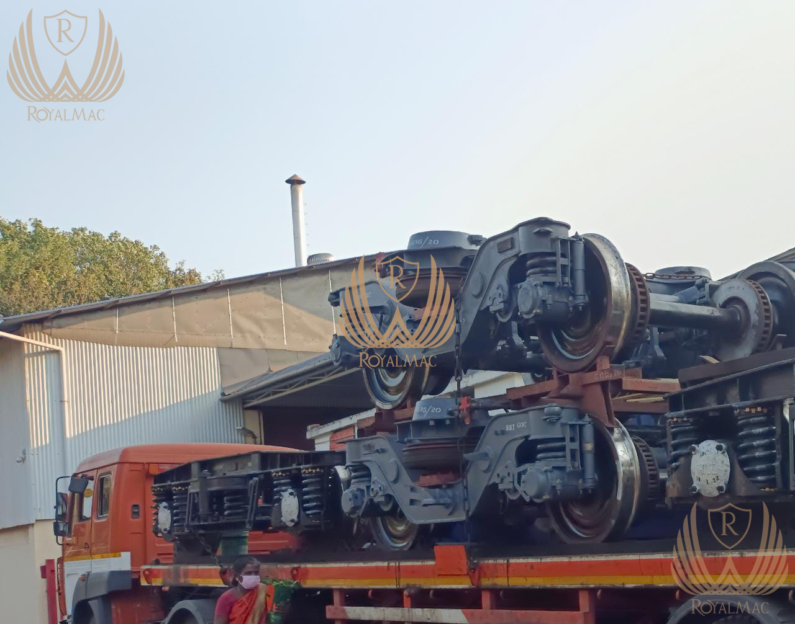
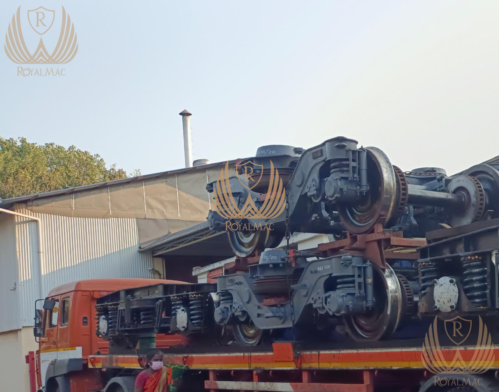

Recycle Your Used and Scrap Rail Line Track
Considering how to recycle and sell your used and scrap rail line track? If you are looking for a way to sell your used rail line track, read this article! It will show you how to recycle this valuable material in an environmentally-friendly manner. Read on to learn about the process and costs! You'll be glad you did. Used rail line track is an excellent way to give back to the environment! It can help you earn money while doing so!
 

Materials
Railroads and transit companies recycle large portions of the track structure, including the rail. While most railroads aim to maintain a high standard of track structure, they are also reusing heavy freight tracks to support relay programs on lower-density lines. In addition to rail, the railroad industry also recycles other track materials, including wood ties, concrete, rubber, ballast, subgrade, and steel. Finally, the railroad industry also recycles construction debris, such as wooden railroad ties, which can be used as landscaping timber.
The materials used in rail lines often contain crushed stones. These stones are called ballast and help hold the wooden cross ties and rails. They also help disperse the weight of the rails and sleepers, providing an elastic cushion for running and allowing for adequate drainage. Minor adjustments may be necessary. However, the track is safe for the environment. The scrap prices offered by rail companies can be found in the Scrap Price Bulletin.
Recycling process
The recycling process for used and scrap railroad line tracks reduces emissions while conserving materials. The metals used to make these railroad tracks are recycled to eliminate the need for harvesting, transport, and ore extraction. The method also prevents bulk metal scraps from ending up in landfills. The benefits of this recycling process are clear. Here are three of them: During the first step of the recycling operation, the used railhead is rolled into a rod. It is skew rolled into a rod. The model takes into account the thermal phenomenon. It also considers the shape change that occurs during the process. After a second stage, the rods are ready for further recycling. After this, they can be used for other applications, including rolling of balls and axisymmetric forgings in a cross-wedge rolling mill.
After the used rail line track is melted, it is sent to a processing plant for solidification. This process is then repeated to produce new products. In recycling, solid metal bars have reached the end of their useful life. This process continues until the products made of these metal bars no longer meet the market's demands. Once the recycled metal bars are processed, they become raw materials for new products.
The majority of railroad tracks are made of carbon steel. Other types of steel are used, such as alloy and heat-treated steel. However, some railroads also use recycled steel for their track structures. This process reduces the potential for greenhouse gas emissions. Furthermore, the railroad industry recycles other materials commonly used for track construction, including wood ties, concrete, rubber, and steel. Besides the rail itself, railroad track recycling can also be used for other materials, such as wood ties, concrete, and plastic.
Cost of recycling
Recycled rail car prices are low, but they are not zero. During the financial crisis of 2007, the costs of shipping railcars and trucks rose dramatically. However, freight prices have dropped significantly, and rail car prices are even lower. Recyclers can use various methods to move rail cars and reduce transportation costs. But there are rare barriers to overcome before reaching the desired profitability.
The cost of recycling used and scrap rail line tracks depend on the length and type. Long distances may be difficult to handle, and the size of the way may be too long for a single operation. Fortunately, scrap yards do not buy too worn rail to be used. The railroads don't want their equipment to break down and lose its integrity. They also don't want to pay the cost of hiring railroad workers, especially unionized railroad workers. Unionized workers may charge up to $110 per foot, whereas non-union railroad workers may charge as little as $80.
Most major North American railroads and rail transit agencies have extensive recycling facilities. While these facilities require considerable capital investment, the profit margin is high. Scrapping is also a green alternative to building new tracks. A significant number of scrap railway tracks are recycled each year. Scrap railway tracks also make an excellent source of construction debris. In addition to rail, other materials that can be recycled include wood ties, concrete, plastic, rubber, ballast, subgrade, additional steel, and construction debris. The Bay Area Rapid Transit District intends to incorporate "green" construction methods. For example, the BART Silicon Valley Extension Project will use recycled tires underneath the rail line to reduce vibration. The Saudi Arabia Department of Resources Recycling and Recovery encourages tire-derived aggregate in engineering projects. The construction crews will use 250,000 scrap tires to create a three-inch layer of tire-derived aggregate. These tires will act as shock absorbers and reduce vibration. Ultimately, this approach will save more than $1 million.
Alternatives to recycling
Recycled steel and other metals are being sought for use in railroad tracks. Currently, used and scrap railroad tracks are sent to scrap metal yards, where they are separated from the rest of the way and melted. These processes require less energy and more materials than the traditional methods of disposing of used and scrap rail line track. They are also an perfect way to reduce emissions. Here are some examples of materials that can be recycled:
The primary concern for manufacturers of rail spurs is low maintenance and equipment costs. But there are other considerations for recycling rail cars and used rail line tracks. The standard car availability is another challenge. There have been shortages in rail cars due to high commodity prices and low demand in the recent past. It has made it difficult for recyclers to meet their need. Rail spurs can offer an alternative means to serve markets in this situation.
CUSTOMER DOUBTS ABOUT ROYALMAC RAIL SUPPLY IN GLOBALLY
One of the vital pieces of information for our customers from all over the world who have doubt about rail line importing when they order Rail line or HMS to RoyalMac for recycling it to their countries.
Many traders do not know is that scrap steel is prohibited to be exported or Importing from various countries by government decision. We, in RoyalMac, provide solution to our Costumers the product of unsuitable rails to be good tracks for trains and did not pass the tests of conformity of measurements due to the different sizes and inequalities and it carries HS CODE: HS73021000. They are thus not suitable for installation as a trainSo we cut it into multiple sizes But it is not classified as scrap: 1,00m | 1,20m | 1,50m | 1,80m | 2,00m | To be ready for recycling at a lower cost.
“ We always strive to provide solutions for our valuable customers “